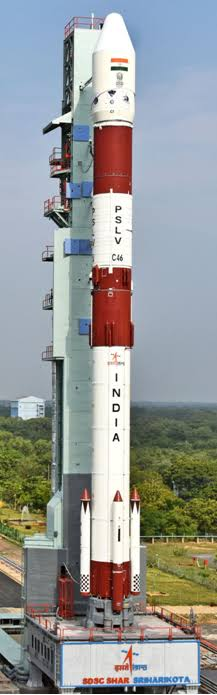
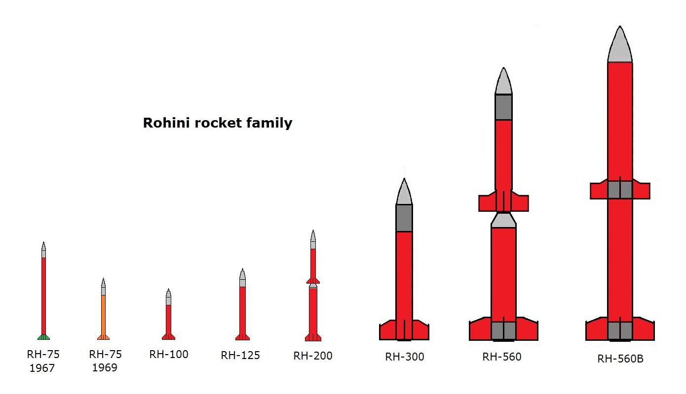
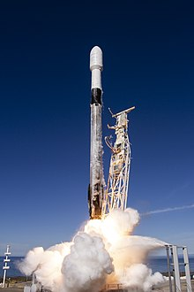
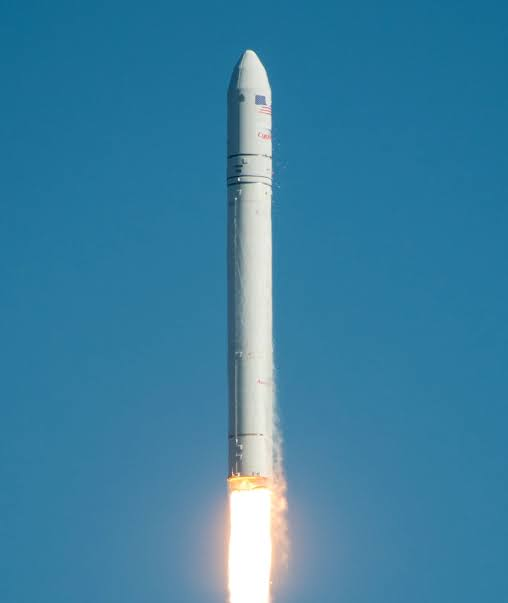
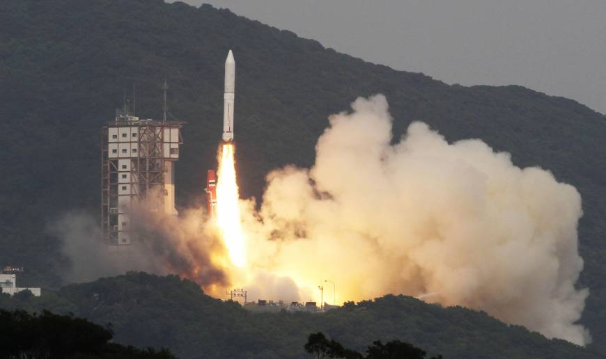
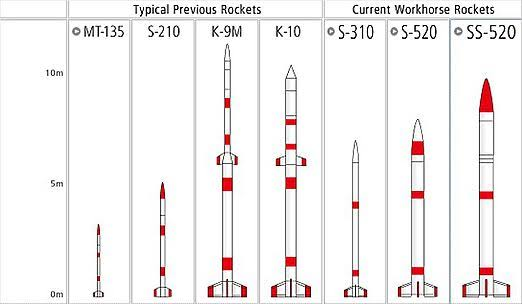

India
POLAR SATELLITE LAUNCH VEHICLE
Polar Satellite Launch Vehicle (PSLV) is the third generation launch vehicle of India. It is the first Indian launch vehicle to be equipped with liquid stages. After its first successful launch in October 1994, PSLV emerged as the reliable and versatile workhorse launch vehicle of India with 39 consecutively successful missions by June 2017. During 1994-2017 period, the vehicle has launched 48 Indian satellites and 209 satellites for customers from abroad.
ROHINI
Rohini is a series of sounding rockets developed by the Indian Space Research Organisation (ISRO) for meteorological and atmospheric study. These sounding rockets are capable of carrying payloads of 2 to 200 kilograms (4.4 to 440.9 lb) between altitudes of 100 to 500 kilometres (62 to 311 mi). The ISRO currently uses RH-200, RH-300, RH-300 Mk-II and RH-560 Mk-II rockets, which are launched from the Thumba Equatorial Rocket Launching Station (TERLS) in Thumba and the Satish Dhawan Space Center in Sriharikota.
United States of America
Falcon 9
Falcon 9 is a two-stage-to-orbit medium lift launch vehicle designed and manufactured by SpaceX in the United States. It is powered by Merlin engines, also developed by SpaceX, burning liquid oxygen (LOX) and rocket-grade kerosene (RP-1) propellants. Its name is derived from the Millennium Falcon and the nine engines of the rocket's first stage.
Antares
Antares, known during early development as Taurus II, is an expendable launch system developed by Orbital Sciences Corporation (now part of Northrop Grumman Innovation Systems after Northrop Grumman acquired Orbital ATK) and the Yuzhnoye Design Bureau to launch the Cygnus spacecraft to the International Space Station as part of NASA's COTS and CRS programs. Able to launch payloads heavier than 5,000 kg (11,000 lb) into low-Earth orbit, Antares is the largest rocket operated by Orbital ATK. Antares launches from the Mid-Atlantic Regional Spaceport and made its inaugural flight on April 21, 2013.
Japan
Epsilon
The Epsilon rocket (formerly Advanced Solid Rocket) is a Japanese solid-fuel rocket designed to launch scientific satellites. It is a follow-on project to the larger and more expensive M-V rocket which was retired in 2006. The Japan Aerospace Exploration Agency (JAXA) began developing the Epsilon in 2007. It is capable of placing a 590 kg payload into Sun- synchronous orbit.
S-Series
S-Series is a fleet of sounding rockets funded by the Japan Aerospace Exploration Agency (JAXA) that have been in service since the late 1960s. Manufactured by IHI Aerospace and operated by the Institute of Space and Astronautical Science (ISAS). The nomenclature of the S-Series rockets is the number of "S"s indicates the number of stages, and the following number details the diameter of the craft in millimeters. For example, the S-310 is a single stage rocket with a diameter of 310 mm.
